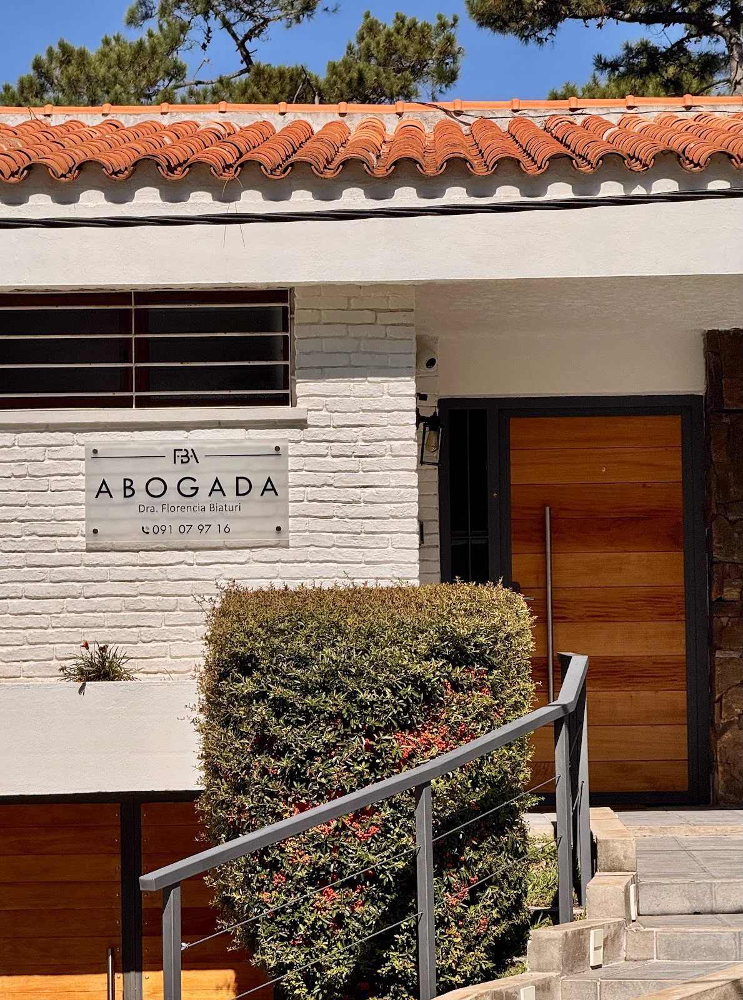

Necesitas hacer una consulta legal?
Explica la situación y coordiná la ciudad o el canal de atención.
Llamanos ahora091 079 716 Consultar ahoraAtención en Maldonado, San Carlos y Punta del Este
Consultas en distintas áreas del Derecho, con coordinación por WhatsApp y atención local en Punta del Este.
Primera orientación para ordenar la situación y los documentos.
Acompañamiento en distintas áreas del Derecho.
Organizacion de pasos y documentación necesaria.
Atención en Maldonado, San Carlos y Punta del Este.
Comunicación para avanzar con mayor claridad.
Análisis antes de tomar decisiones o responder documentación.

Explica la situación y coordiná la ciudad o el canal de atención.
Llamanos ahora091 079 716 Consultar ahoraSituaciones concretas
No necesitas identificar de antemano el área jurídica. Podés explicar la situación y coordinar una consulta.
Podés coordinar directamente por WhatsApp.
Contar mi situacionSobre nosotros
Florencia Biaturi comunica asesoría legal cercana para personas de Maldonado, San Carlos y Punta del Este. El foco esta en escuchar la situación, ordenar la información inicial y coordinar el camino de atención.
Conoce como trabajamosConsultas coordinadas en Maldonado, San Carlos y Punta del Este.
Contacto por WhatsApp para iniciar la consulta.
Orden de la información y próximos pasos posibles.
Profesional a cargo
La consulta se inicia con contacto directo para ordenar la situación y definir los próximos pasos posibles.
Te acompanamos paso a paso con un enfoque claro y profesional.
Escuchamos tu situacion para conocer el punto de partida.
Identificamos la documentacion y las opciones disponibles.
Te explicamos con claridad los proximos pasos posibles.
Avanzamos manteniendo una comunicacion responsable.
Testimonios modelo
Me ayudó a ordenar la situación y entender qué documentación tenía que presentar antes de avanzar.
La atención fue clara, directa y cercana. Pude coordinar la consulta por WhatsApp sin vueltas.
Valoré el seguimiento y la explicación simple de los próximos pasos.
Encontré una respuesta profesional para revisar el tema antes de tomar una decisión.
Preguntas frecuentes
Informacion practica para dar el primer paso con mayor claridad.
Tenes otra pregunta? LlamanosEn Maldonado, San Carlos y Punta del Este.
Podés coordinar directamente por WhatsApp al 091 079 716.
En Abraham Lincoln casi avenida Roosevelt, parada 15.
La información pública indica asesoría legal en distintas áreas del Derecho.
Si tenés documentos vinculados al asunto, conviene mencionarlos al coordinar.
No. Es información general y no reemplaza asesoramiento profesional personalizado.
Ubicacion
Un punto de atencion para coordinar tu consulta y acercar la documentacion necesaria.